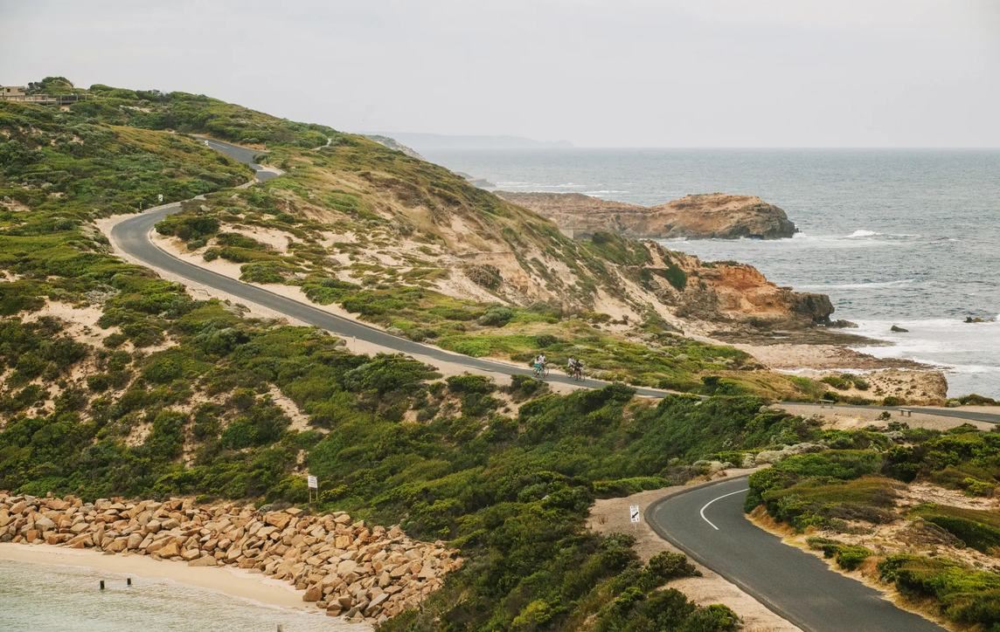

Peninsula Insider
Give the coast
a whole day.
Commit to 35km only if you have prepared for it.

Photo · Jesse Hisco, courtesy of Visit Victoria
Point Nepean National Park, Mornington Peninsula.
Explore this week’s planpeninsulainsider.com.au